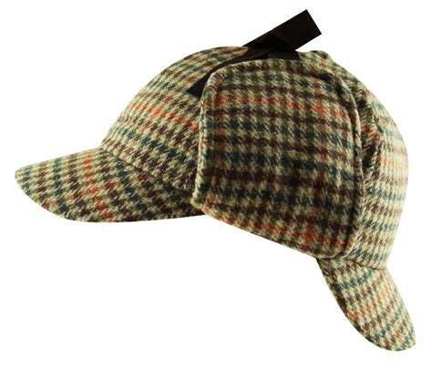

Welcome to "Musings of the Doctor" the website that I created to share
the details of the various cases me and my partner Sherlock Holmes have
worked on or are currently working on.
Here I endeavor to share various news about our undertakings to stop the
criminal element as well as some more light hearted content.
On this website you will find an about page to inform you about me and
my partner.
A page on the various solved cases we have completed.
A page on the ongoing cases we are currently investigating.
A page on recipes mostly curated by the marvelous Mrs. Hudson.
A sign up page where you can enter in your information in order to stay
up to date with our intrepid adventures.
A log in page so you can sign in after you have signed up.
A contact page informing you of the best times and places to reach us if
you require our services.
Aclue page where concerned citizens who believe they have relevant info
regarding an ongoing case can submit evidence.
Please keep in mind that the the clues page is only for currently
ongoing and open cases.
And lastly a page that hosts a game that you can use to test and sharpen
your crime solving skills.
221B Baker Street London
Dr. John Watson
Former army doctor turned asset to the Constabulary of London Dr. Watson is the liaison for Scotland Yard to the rather eccentric detective Sherlock Holmes.
| Address | Phone Number | Available Times | |
|---|---|---|---|
| 221B Baker Street | drwatson@scotyard.org | 1-111-111-1111 | 10:00am~12:00pm Mon~Fri |
Det. Sherlock Holmes
Invaluable asset for the police and bane of the criminal underbelly of London Detective Holmes while often enigmatic works are using his powers of deduction to right wrongs.
| Address | Phone Number | Available Times | |
|---|---|---|---|
| 221B Baker Street | Unavailable | Unavailable | Unavailable |
Arthur Conan Doyle
Mr. Doyle is a ghost writer who has been working with Dr. Watson to better catalogue the various cases of Det. Holmes into books for the enjoyment of many
| Address | Phone Number | Available Times | |
|---|---|---|---|
| 243 Main Street | acd@gmail.com | 2-222-222-2222 | 10:00am~12:00pm Mon~Fri |
Area of Operation
For the most part Det. Holmes and Dr. Watson serve the greater London area but in the event of particularly important cases will venture beyond the capital.